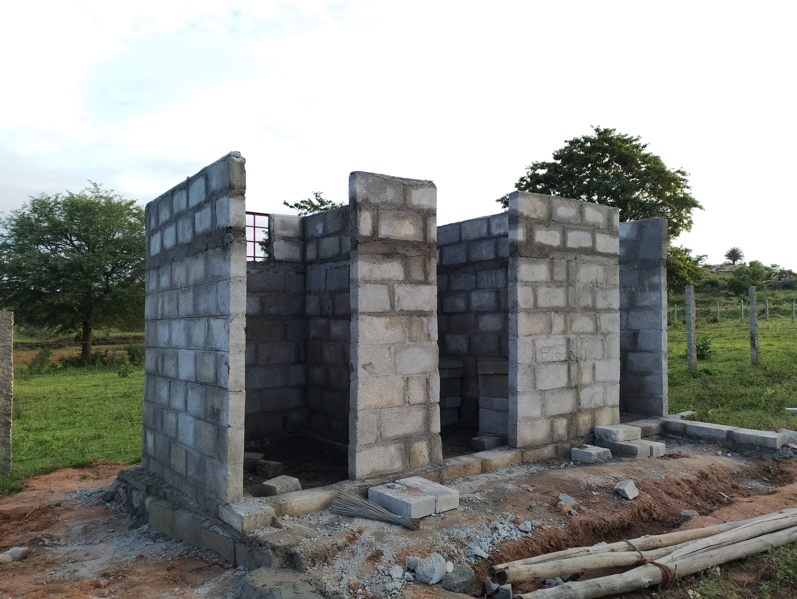
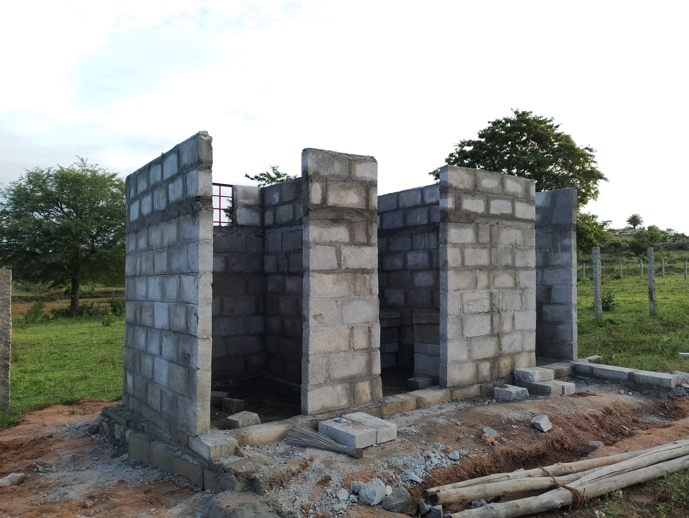

Mahabodhi Prakriti Buddha Vihara
Mahabodhi Prakriti Buddha Vihara, is a branch of Mahabodhi Society Bengaluru, located in the serene outskirts of Bengaluru, Karnataka, continues its journey as a non-profit organization dedicated to spiritual development in sync with the natural surroundings. In the past year, we have made significant progress toward our mission, and we are pleased to share the highlights of our accomplishments.
 
